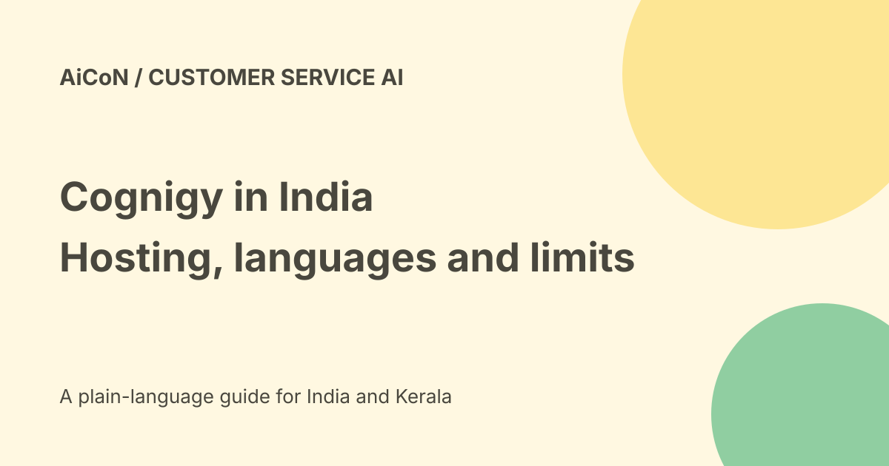

NiCE Cognigy in India: hosting, languages and rollout checks
NiCE announced general availability of Cognigy in India on 23 September 2026. Its release describes a dedicated Mumbai environment with Hyderabad for disaster recovery. That confirms the vendor's India launch claim, not the data location of every external model, tool or integration used by a customer.

What is it for?
Cognigy is enterprise customer-service software for AI agents across voice, text and image. The announcement names more than 30 channels, including WhatsApp.
It is not a free personal chatbot app. A business needs the appropriate contracts, integrations, workflows and staff process to serve real customers.
Language claims and Malayalam
The release names Hindi, Tamil, Bengali and code-mixed Hinglish, with local speech-to-text and text-to-speech support. It describes switching between languages and modes while keeping context.
Those are vendor claims. We did not test Malayalam, Kerala accents, mixed speech, names or noisy phone calls. Do not infer perfect Malayalam performance merely from an India launch.
Local hosting has a scope
NiCE says the dedicated environment is in Mumbai with Hyderabad as the disaster-recovery site, alongside local deployment and support.
Before handling customer data, obtain the exact contract for your deployment. Check model processing, telephony, logs, backups, subprocessors and outbound tools. One local platform environment is not proof that no data ever leaves India.
Agent Studio and development
The official release describes visual design, prompt-based onboarding and more than 100 prebuilt tools and integrations. It also describes configuring agents from Claude Code through Agentic Building for CX AI.
Listed integrations are not automatically configured or authorised in your account. Check the real scope and whether the agent can only read records or also change bookings, issue refunds or send messages.
CXone or a standalone layer
NiCE says the agents are available through CXone or as a standalone capability over an existing stack. That is deployment flexibility, not a promise of zero implementation work.
Identity mapping, knowledge freshness, data permissions, handoff and monitoring still matter. Test your actual CRM, ticketing and telephony setup.
Customer-result claims
The announcement describes an unnamed large intercity mobility provider using a WhatsApp agent for Indian customers, with better response times and satisfaction.
We did not verify that customer's deployment or reproduce its results. Nor is a quoted vendor result a guarantee that another business will see the same improvement.
How an Indian team can evaluate
- Choose one narrow customer question or process.
- Ask for the exact India deployment and module terms.
- Check supported languages with your own sample calls.
- Use public or approved test data.
- Inspect read and write permissions on each integration.
- Define human handoff for urgent and uncertain cases.
- Test wrong names, missing records, silence and interruptions.
- Measure error rate as well as speed.
- Review logs, rollback and support.
- Approve a scoped contract before production use.
Pricing and free verdict
No public final INR tariff, free self-service tier or actual quote was established in the checked announcement. Ask NiCE for the module, usage, telephony, implementation and renewal costs.
General availability does not mean every prospect receives immediate access or the same plan. No demo, sales outreach or account connection was made here.
Customer safety and privacy
Support conversations can include payment, identity and medical details. Do not collect secrets through an open chat prompt or let a language mistake trigger an irreversible account change.
Keep approval rules for refunds, sensitive disclosures and account access. A natural-sounding voice can still give the wrong answer.
What changed since the original post?
We retain the official India general-availability date, clarify disaster-recovery versus all-data-local claims and separate named language support from untested Malayalam quality.
Frequently asked questions
Is it free?
No public free tier was verified.
Does Mumbai hosting prove every service processes in India?
No. Check the full deployment contract and external providers.
Was Malayalam tested?
No.
Sources: Official NiCE India launch. Checked 7 October 2026.